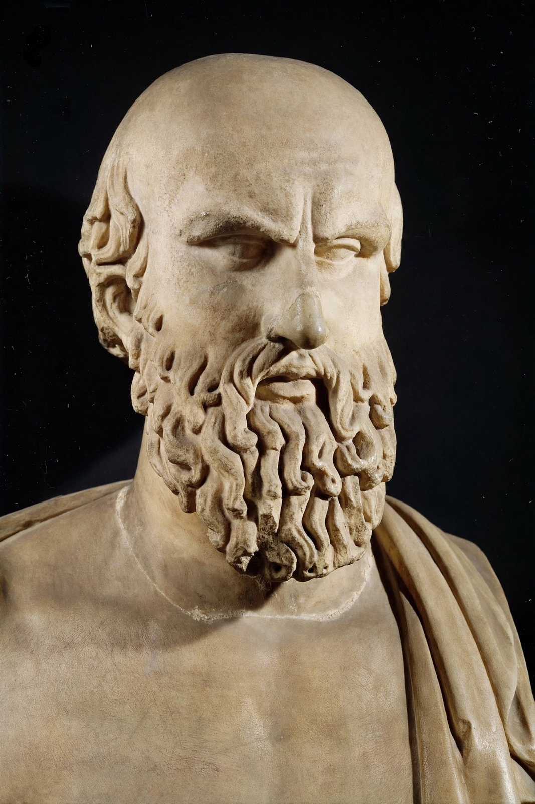

Aeschylus
From Wikipedia, the free encyclopedia

Aeschylus (c. 525/524 – c. 456/455 BC) was an ancient Greek tragedian, often described as the father of tragedy. Of the estimated seventy to ninety plays he wrote, only seven survive complete, including the Oresteia trilogy — the only extant trilogy of Greek drama — and The Persians, the earliest surviving play in Western literature.
Life
Aeschylus was born at Eleusis near Athens into a wealthy family, fought at the battles of Marathon (490 BC) — where his brother died — and probably Salamis (480) and Plataea. He won first prize at the City Dionysia at least thirteen times and died at Gela in Sicily; legend says an eagle dropped a tortoise on his bald head, mistaking it for a rock.
Innovations and works
Building on Thespis, Aeschylus added a second actor, reduced the role of the Chorus, and made dialogue and conflict the centre of drama; a third actor was added late in his career (Sophocles is credited with it). Surviving plays: The Persians, Seven Against Thebes, The Suppliants, Prometheus Bound (authorship disputed) and the Oresteia — Agamemnon, The Libation Bearers and The Eumenides (458 BC) — which traces the curse on the house of Atreus to the founding of justice in Athens.
Influence
Aeschylus's vast cosmic themes — justice, hubris, inherited guilt — shaped Sophocles and Euripides, and his work was revived constantly in later centuries, influencing Seneca, opera (Verdi, Wagner's reading of the Oresteia) and modern dramatists.